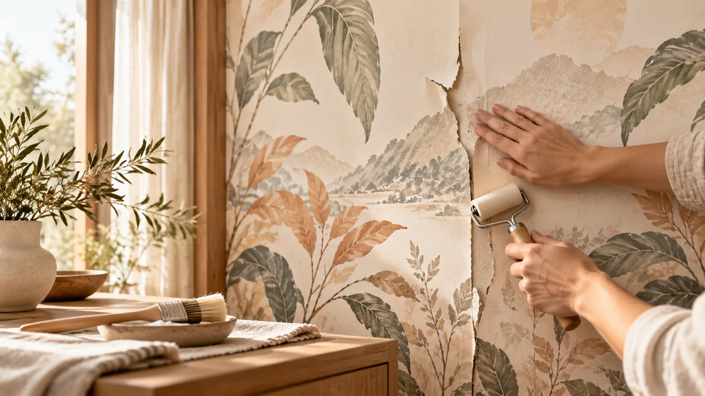

Furniture, sharp objects, everyday use, and pets can tear wallpaper. Small repairs may be possible if matching material is available and the wall is in suitable condition.
Set aside matching wallpaper
The best match is usually leftover wallpaper from the original installation. Keep offcuts with their product code and batch information.
How to patch a small damaged area
- Clean the area and check that the wall is dry and free from moisture problems or mold.
- Cut a matching patch larger than the damaged area and align the pattern.
- Use an adhesive suitable for the wallpaper and follow the manufacturer’s directions.
- If trimming through overlapping layers, use a straightedge and craft knife carefully. Avoid cutting into the wall surface.
- Remove the damaged section, place the patch, smooth the seams, and let the adhesive dry as directed.
What if matching wallpaper is unavailable?
Use the product code to ask whether it is still available. Colors can differ across batches and between new and aged material.
When to call an installer
Ask an installer to inspect extensive damage, multiple failing seams, moisture, or peeling before attempting repairs.
Keeping spare wallpaper and its product code makes future repairs easier to plan.
Ready to refresh your room?
Browse materials and patterns in the catalogs or ask FACEWALL for a free consultation.
This example article draws on FACEWALL’s introductory material. Confirm product and site details before applying the guidance.